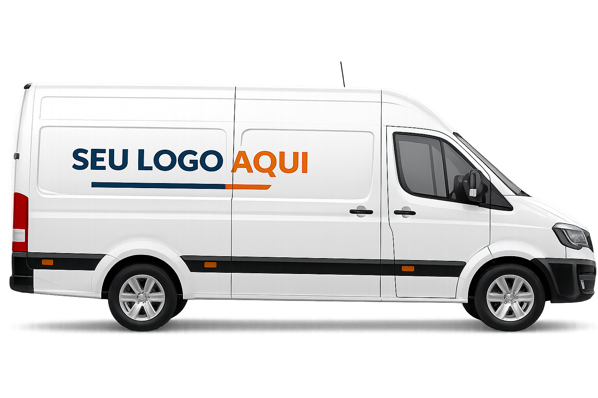
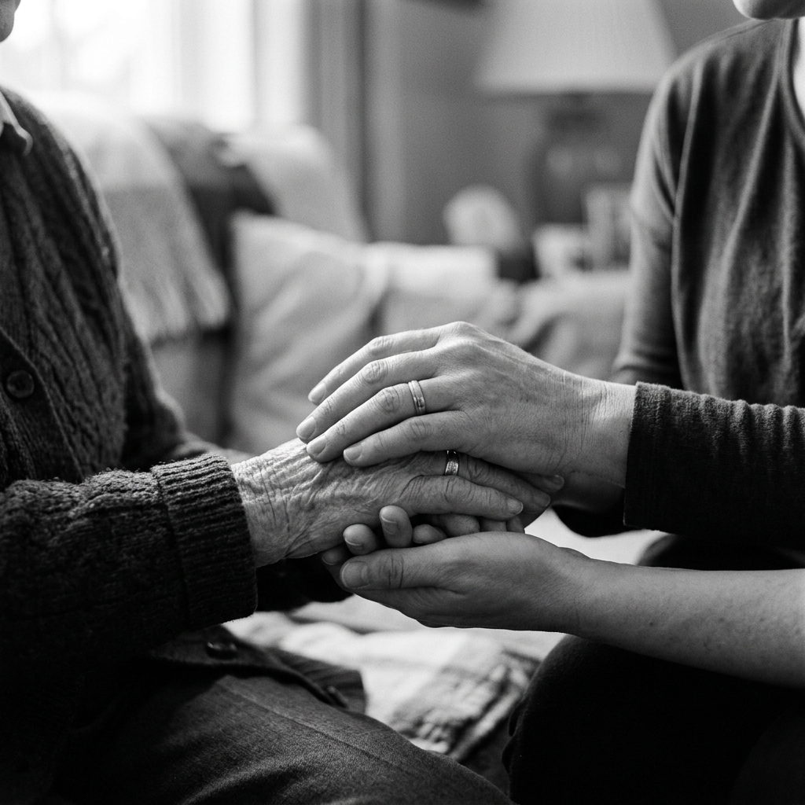
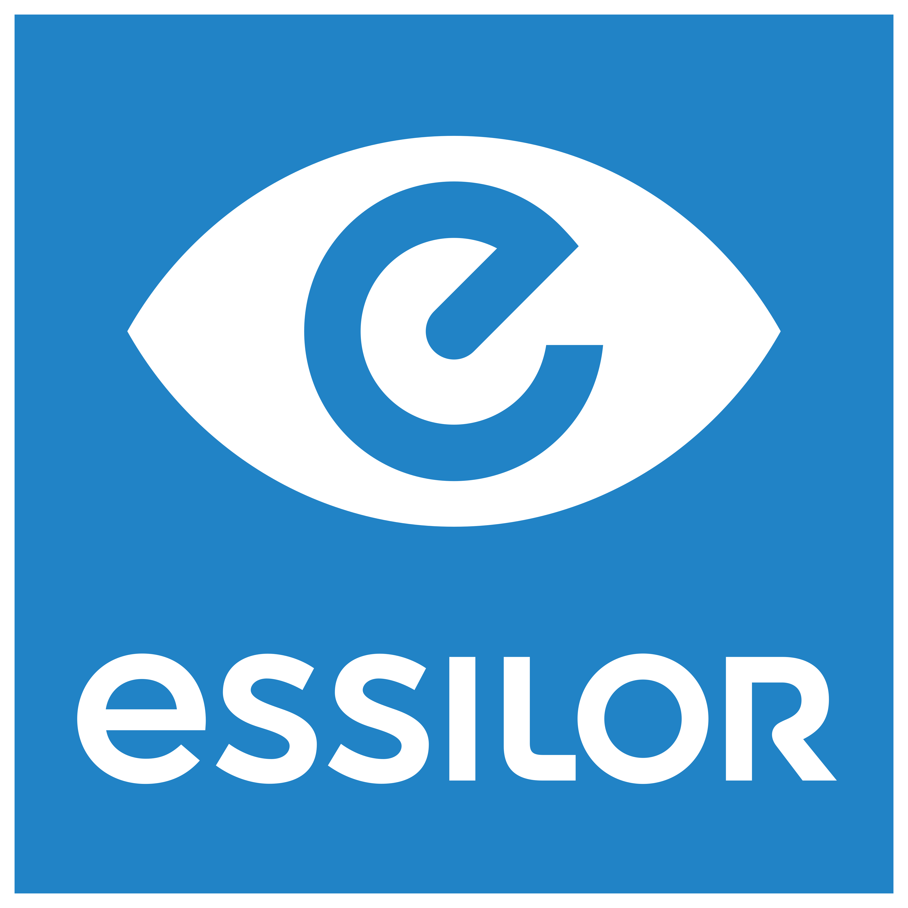
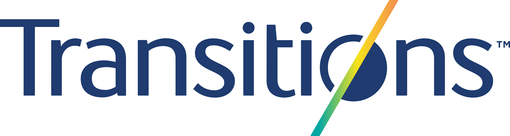
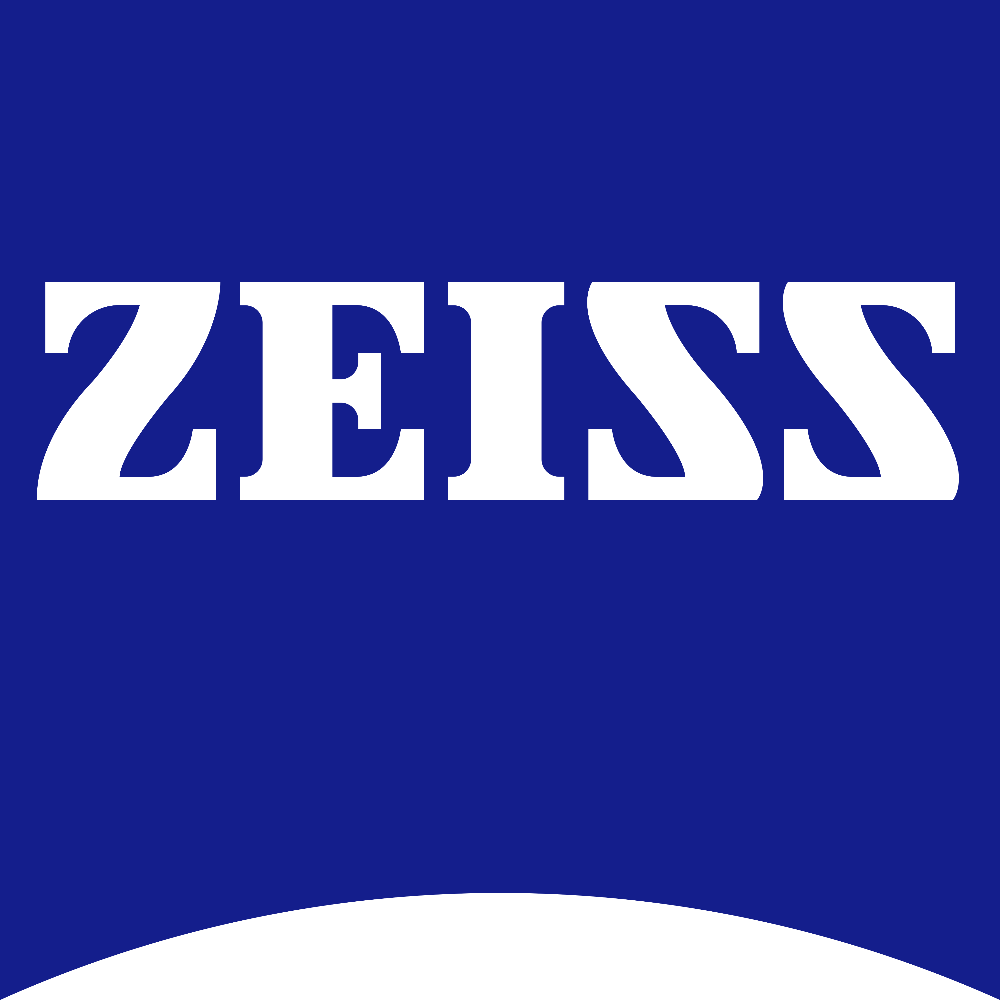
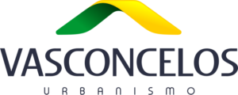

Divulgação


Promovendo saúde ocular, autonomia e qualidade de vida para idosos.
Aprovado no Fundo do Idoso
O projeto VER BEM É VIVER BEM é uma iniciativa itinerante com o nobre propósito de promover a saúde ocular e inclusão de 8 mil idosos em situação de vulnerabilidade social, por meio da realização de exames oftalmológicos e distribuição gratuita de 1.600 óculos de grau em comunidades carentes e instituições, indicadas pelos apoiadores.
Este projeto, ainda, contribui fortemente para a saúde integral dos idosos, reduzindo o risco de queda e depressão, além de promover a empregabilidade, autonomia, autoestima, bem estar, e gerar condições de uma vida mais digna para idosos em que possam explorar o seu máximo potencial. Seja no trabalho, nas atividades do dia a dia, um par de óculos de grau tem o poder de transformar vidas.
exames oftalmológicos
óculos de grau
cartilhas sobre saúde ocular
Promover a empregabilidade
Reduzir o risco de queda e depressão
Aumentar a autonomia, autoestima e bem estar
Idosos atendidos
Familiares impactados
À escolha do patrocinador
Além dos exames, serão distribuídas cartilhas sobre a importância dos cuidados oculares e detecção precoce de problemas visuais.
A abordagem central é a realização de exames oftalmológicos, identificando problemas visuais como Miopia, Hipermetropia e Astigmatismo, que possam afetar as atividades diárias, e fornecer óculos corretivos.
O Projeto se dedica a eliminar as barreiras que impedem idosos em vulnerabilidade social de terem acesso a exames oftalmológicos e a óculos.
A mobilidade da unidade clínica permitirá uma cobertura mais abrangente, possibilitando o atendimento em diversas localidades.
Por meio de uma clínica móvel, o atendimento será levado até as organizações sociais, evitando que os idosos tenham que se locomover.
Em acréscimo o projeto irá educar os idosos atendidos sobre a importância dos cuidados com a visão e o manejo adequado dos óculos, por meio de uma cartilha.
Em alinhamento com a Agenda 2030 da ONU, este projeto atua no âmbito dos seguintes Objetivos de Desenvolvimento Sustentável:

A REDE BRASIL DE INCLUSÃO SOCIAL por meio de seu Serviço de Convivência ao Idoso, oferece um serviço de Proteção Social Básica como parte da política de assistência social inerente ao SUAS (Sistema Único de Assistência Social). Seu principal objetivo é prevenir situações de vulnerabilidade e risco social, com todas as atividades oferecidas de forma inteiramente gratuita.
O projeto pode ser executado em qualquer município do Brasil a escolha do patrocinador.
Escolha a melhor forma para a sua empresa transformar vidas.

Este projeto conta com oportunidades de voluntariado,
no momento da entrega dos óculos para as crianças.
Visão para Inclusão




Este projeto está aprovado no Fundo do Idoso, podendo ser patrocinado com 100% de isenção fiscal, ou seja, a custo zero, até o limite de 1% do Imposto de Renda a recolher, por empresas que apuram o IR como lucro real.